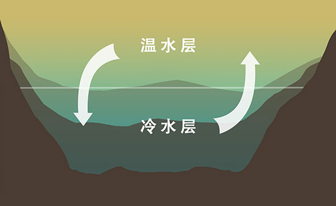
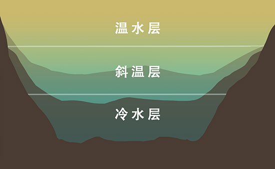
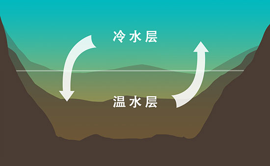

最佳时间
来源:渔获
发表时间：2016-03-23 12：31
分享到


本文主要了解钓淡水鱼的最佳时间，什么是季节性湖水动态，水温如何影响钓鱼。
一、季节性湖水动态
湖水动态是指湖水或河水从表面到底部的循环交替流动。这种循环交替一般一年两次，分为春季循环流动与秋季循环流动。春季到秋季，暖流从水面流向底部，寒流从底部升到水面。
通过某种鱼对水性的偏好来理解动态，你就可以成为一个洞察鱼情的钓鱼天才了。
| 春季循环流动

天气变暖，湖水表面温度上升，湖底的冷水上涌，直到整个湖面温度恒定不变。在这个过程的早期阶段，鱼类会停留在水温回暖较快、植物复苏的浅水区。
| 夏季分层流动

夏季湖水表面温度上升，但表面湖水并不下沉，而是呈现出一种分层状态。鱼类喜欢冷水，但也需要含氧量较高的温水，因此它们会迁移到一个鉴于二者之间的舒适区域，即斜温层。斜温层一般位于湖面下0.6-3米深，深度的不同取决于湖泊的大小。
| 秋季循环流动

随着秋天的到来，湖面水温逐渐降低。秋季强风吹过，表面湖水下沉，底部的冷水上涌，从而形成了秋季循环流动。
水温随着水循环慢慢达到平衡状态，水温适宜，氧气充分，鱼儿便会自由活动，否则很少有鱼会出现。
| 水温和循环流动
每种鱼的生存适温范围是不同的，尽管在水温有差异的环境中能生存下来，但它们更愿意在适温范围内活跃。结合水温和循环流动知识，你可以大致预测钓鱼的最佳时间和特定位置。喜温水的鱼类常活跃于夏季的水面和秋季的湖底，喜冷水的鱼类则在春季活跃于湖底，秋季常游于湖面，不过这仅供参考，因为钓鱼也是一门技术活。
二、温度
天气炎热的夏季和温度较低的冬季，湖泊、池塘和河流里的鱼类比较迟钝。为什么呢？因为所有的鱼类都是冷血动物，也就是说它们不能像人类或者其他热血动物一样使体温保持恒温。所以它们周围的温度对其生理机能有很大的影响。温度过高或过低都会减少水内的氧气含量，从而导致鱼类行动迟缓。
了解了这些内容，你是否成为了钓鱼达人？
扫一扫分享